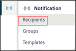
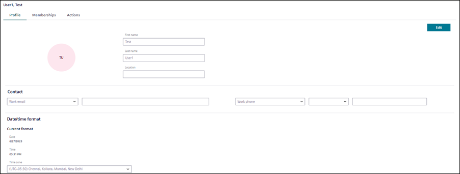
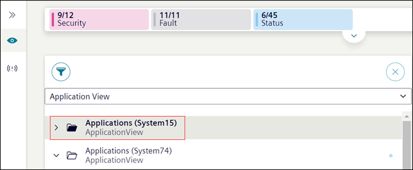
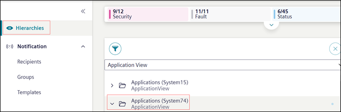

Creating and Managing Recipients
This section provides step-by-step instructions on how to add, update, and remove recipients from the Flex Client.
Add Recipient
- In the top navigation bar, select System.
- In the left side bar, click .
- Navigate to Notification > Recipients.

- The list of all the recipients with their state displays.
- Click Add to add new recipients. For more information, see Profile in Recipients
- In the Profile tab, enter the following details,
- Configure the First name, Last name and Location of the recipient.
- In the Contact section, enter the work / private email, work / private phone number, or pager number. Recipient can add or delete multiple entries in the contact section.
NOTE: Private email and Private phone number is available only for Reno Plus users. - (Applicable only for Reno Plus users)
In the Date/time format settings, in the Time zone drop-down, select the correct time zone. - Click Save.
- The recipient user is added to the Flex Client.
NOTE: Verify the user is added in the installed client.

Update Recipient Details
- The recipient profile to be updated is present in Notification > Recipients.
- Select the recipient to be updated.
- (Optional) To search for a specific recipient, enter the name or state of the recipient in the Search field.
- The respective recipient's name displays.
- In the Profile tab, click Edit and update the recipient's details. Click Save.
- The recipients details are updated.
Search Recipient from the List
- The recipient profile to be viewed is present in Notification > Recipients.
- To search for a specific recipient, enter the Name or State of the recipient in the Search field.
- The respective recipient's name displays.
- Select the recipient to be viewed.
- The respective recipient's details display.
Block Recipient
- The recipient profile to be blocked is present in Notification > Recipients.
- Select the recipient to be blocked.
- (Optional) To search for a specific recipient, enter the name or state of the recipient in the Search field.
- The respective recipient's name displays.
- In the Actions tab, you can block or unblock the recipient’s account.
- To block the account, click Block account.
- To unblock the account, click Unblock account.
- The recipient state changes to Blocked or Active accordingly.
NOTE: Verify the recipient state in Install Client.
When changing the recipient state either in Flex Client or Install Client, to reflect the same status in Install Client or Flex Client accordingly switch to the different node and reselect the same node to get the current status of the recipients.
Delete Recipient
- The recipient profile to be deleted is present in Notification > Recipients.
- Select the recipient to be deleted.
- (Optional) To search for a specific recipient, enter the Name or State of the recipient in the Search field.
- The respective recipient's name displays.
- In the Actions tab, click Delete account.
- In the confirmation message that displays, click Delete.
- The recipient is deleted from the list.
Set Recipient State as Do Not Disturb
- The recipient profile to be set as Do not disturb is present in Notification > Recipients.
- Select the recipient.
- (Optional) To search for a specific recipient, enter the name or state of the recipient in the Search field.
- The respective recipient's name displays.
- Open the Do not disturb drop-down.
- Select the required time from the given options or click Customize to customize the date and time. For more information, see Do Not Disturb in Recipients User Workspace
- The recipient can view the remaining time that displays in front of the Do not disturb drop-down. Recipient's state changes to Do not disturb.
NOTE: Verify the recipient state in Install Client.
When changing the recipient state either in Flex Client or Install Client, to reflect the same status in Install Client or Flex Client accordingly switch to the different node and reselect the same node to get the current status of the recipients.
View Recipients of Distributed Systems in Flex Client
- Systems are in a distributed environment.
- Recipients are present in distributed systems
- In Flex Client, the Application View of each system is visible
- In the top navigation bar select System.
- To view recipients of System 1 perform the following steps:
- In the System Browser, select the Application View (System [X]).

- In the left side bar, click .
- Navigate to Notification > Recipients.
- System1 recipients are displayed. You can view and modify the recipients information of System 1.
- To switch to a different system and view or edit recipients of System 2 perform the following steps:
- In the left side bar, click Hierarchies and in the System Browser select Application View (System 2).

- In the left side bar, click
- Navigate to Notification > Recipients.
- System 2 recipients are displayed. You can view and modify the recipients information of System 2.